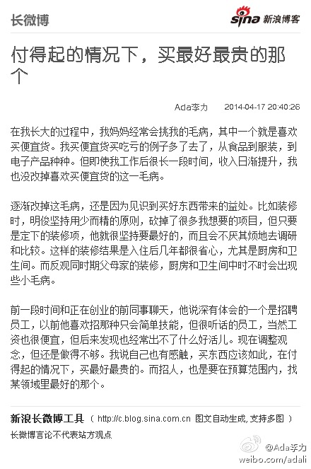

之前只知道guanxi, fapiao 已经成为英文词汇，现在又加上一个mafan. @laiyonghao:听两天在南昌候机的时候听到旁边的一个老黑说“too much ma fan”，我说难道“麻烦”也像“关系”那样成了英文单词了？当时仔细想想，还真不是一个好译的词，采用音译其实很智慧。今天一查，果然有这个词噢！ 网页链接
#社区运营#大赞这个观点。大而全的社区，越来越没特点，缺乏黏性而且难以让人记住。细分领域以及垂直领域的社区，还有很多机会。而细分领域的社区，一定会只拥抱一部分人，不是所有人都需要讨好的。@李智勇SZ:对社区这东西，我现在的观点是如果他能很好的让部分人不喜欢，而让另一部分很喜欢，那这东西没准很有存在价值。特别一般性的社区不是不行，但感觉没几个能活下来，大多应该是不行。
跟人聊天，我说自己做过两年大学老师，发现自己对教笨孩子没耐心，对不愿意学习的孩子更没好感。对方提了个好问题：岂不是你做领导时就不能教员工？我说对小团队来说，更重要的是队员之前要很契合，这样沟通成本最低，所以招聘环节要坚持宁缺勿滥的原则。跟教育原则不一样，老师是不能拒绝学生的。
付得起的情况下，买最好最贵的那个： 在我长大的过程中，我妈妈经常会挑我的毛病，其中一个就是喜欢买便宜货。我买便宜货买吃亏的例子多了去了，从食品到服装，到电子产品种种。但即使我工作后...文字版>> 网页链接 （新浪长微博>> 网页链接） 